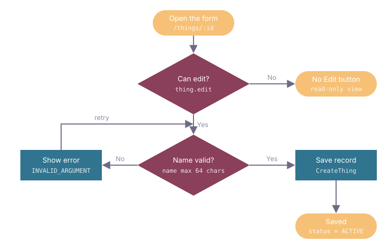

Feature Name
One or two sentences: what the feature lets a user do, and which system does the work.
Key decision
The one design choice a reader must know first.
Data impact
New tables and changed columns, or "no schema change" (the Database changes section then says so in one sentence).
UI impact
Which screens change.
Scope
| In scope | Out of scope |
|---|---|
| Capability that ships | Capability left for later (why) |
Flows
Each flow has two diagrams, hidden until you open them. Flowchart: the flow's logic (steps, Yes / No decisions, loops). Sequence diagram: how the services talk to carry it out. Files live under flowchart/ and sequence-diagram/.
1. Example flow
US1 · P1FR-001 · FR-002flowchart/01-example-flow.svgsequence-diagram/01-example-flow.js
What this flow achieves, in one or two sentences. Trigger: where the user starts it.
Flowchart · flow logic

Sequence diagram · how the services talk
Rules · what this flow must keep
- A rule from the spec that the implementation must not break.
Try it in the mock (opens in a new tab)
Database changes
Only tables whose schema changes. Accent border = new table · solid border = existing table, changed columns only. Migration: path/to/migration.sql.
Open ER diagram ↗ every related table and relation, on its own page
- schema.table_a.id 1 ── * schema.table_b.table_a_id (new FK)
Full schema · every related table, all columns
Every table this feature reads or writes. Changed rows keep their + add / ~ / − drop marks. Dashed border = external (another service owns it).
- schema.table_a.id 1 ── * schema.table_b.table_a_id (new FK)
- schema.table_a.id 1 ── * schema.table_c.table_a_id
API changes
Each API with its request and response changes. File: path/to/service.proto · additive, wire-compatible. Accent border = new message · solid border = existing message, changed fields only.
CreateThing
newPOST /api/v1/thingspermission things.create
GetThings
behaviour changeGET /api/v1/thingspermission things.read
Behaviour · what changes at runtime
- Honours the new filter; empty means no filter.
Shared types
Full contracts · every related API, full request and response
Every API this feature adds, changes or calls. Changed fields keep their + / ~ / − marks.
CreateThing · POST /api/v1/things · new
GetOwner · GET /api/v1/owners/{id} · called, unchanged
Errors
| Cause | Code | User sees |
|---|---|---|
| Upstream refuses | FailedPrecondition | A reason the user can act on. |
Mock UI
Links open the mock in a new tab. Built from the app's real design system; pages call a fake API with the real operation names.
Open questions
- QuestionWhat must be decided or verified, and by whom.